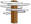

|

- Очерки психологии мировоззрения как основы просветительской практики ( Comments )
- От ничтожности к сопоставимости с Мирозданием или к вопросу о смысле существования человека ( Comments )
- Нобелевская лекция И.П.Павлова 'О русском уме' ( Comments )
- Проект "Бизнес, власть, общественность и СМИ в российской благотворительности" ( Comments )
- Дело Виталия Бунтова ( Comments )
- Дело Егора Новиковского ( Comments )
- Все мы сыны и дочери Человечества, но не собственность возомнивших о себе… ( Comments )
(все новости...)


Sitemap
Мини-газета "Петля обратной связи" - №1(9) - июль 2010 |
||
|
|
|
|
Таков универсальный «закон обратных связей» |


МИНИ «Петля обратной связи» ГАЗЕТА
Орган правозащитно - просветительской группы «Обратная связь»
Июль № 1(9) 2010 год
-
К 30-ой годовщине смерти Владимира Семёновича Высоцкого -
Содержание: 1. С кем Высоцкий? 2. К народу -
1. С кем Высоцкий? Любовь и психология в защиту имени поэта -
В последние (с начала либерализации СССР) годы мне часто в тех или иных формах приходилось слышать вопрос: «С кем был бы Владимир Высоцкий, случись ему дожить до «перестройки»? или уже сразу ответ на него. -
А ведь Владимир Высоцкий сам довольно ясно дал понять, - с кем он. -
Вот свидетельство этому, почерпнутое из книги близкого его друга - жены Марины Влади. -
«- Уехать из России? Зачем? Я не диссидент, я артист. -
Ты говоришь это в Нью-Йорке во время знаменитой передачи Си-би-эс «Шестьдесят минут». У тебя покраснело лицо, и побелели глаза - видно, как ты раздражён. -
- Я работаю со словом, мне необходимы мои корни, я - поэт. -
Без России я - ничто. Без народа, для которого я пишу, меня нет. Без публики, которая меня обожает, я не могу жить. Без их любви я задыхаюсь. Но без свободы я умираю. -
Естественно, этого ты не говоришь, эти фразы, связывающиеся друг с другом в течение времени, я собираю из наших разговоров. В них заключены двенадцать лет доверительных бесед, криков, признаний, разрывов. Эти мысли есть почти во всех твоих песнях. -
Когда важный чиновник американского телевидения спрашивает тебя, почему ты не остаёшься, и главное как ты попал сюда, тебе также трудно ответить ему, как и важному чиновнику из ОВИРа, который спрашивает: «Зачем вы всё время ездите туда? Вам что, здесь места не хватает?» -
Это двойное противоречие безвыходно...» -
(Марина Влади. Владимир, или Прерванный полёт». М.: «Прогресс», 1989, с.147) -
Итак, судя по тексту отрывка, в судьбе поэта обнаруживается несовместимое с жизнью противоречие. -
С одной стороны, идентификация себя Владимиром Высоцким как сугубо российского любимого артиста и поэта (базовые социальные потребности совместного и значимого существования в градиенте всей шкалы базовых потребностей человека - Схема 1)**). -
-
Схема 1. Шкала усложнения сферы базовых потребностей человека
Бродский Д. «Некоторые психологические основы конструктивной социальной толерантности» (с.с.142-159) в сборнике для учителей «Права ребёнка и толерантность. Использование сообществ в рамках обучающего процесса», Ростов - на - Дону, 2002, «Молодёжная правозащитная группа - Ростов-на-Дону».
-
С другой стороны, объективно неудовлетворённые, постоянно мучащие его и осознаваемые им как художником, высшие базовые потребности: а) высшая социальная потребность - свободного экономического и политического существования; б) первая из личностных потребностей - потребность реализованного (творческого) существования. -
Одно только состояние фрустрации,* формирующейся как результат невозможности удовлетворения потребности свободного существования без ущемления личного достоинства, по причине соответствующей фатальной политической депривации ***, уже практически депрессировало Владимира Семеновича Высоцкого. -
Уже эта фрустрация толкала артиста в бездну отчаяния, со всеми вытекающими последствиями. -
Что уж говорить о его неуёмной жажде творческой реализации (потребность реализованного существования), которая также трагически не могла быть удовлетворена в условиях тоталитарного режима. -
Исходя из всего сказанного, я делаю заключение, что Владимир Высоцкий ментально был с теми, кто стремился освободить Россию от пут национал - коммунистического гнёта, то есть хотел быть свободным гражданином и певцом своей Родины - России. -
Он «сгорел», пытаясь совместить удовлетворение несовместимых, в условиях деспотического (хрущёвско-брежневского) тоталитаризма, потребностей. -
Ведь он рискнул быть одновременно любимым (значимым) в глазах всего «советского» народа и быть самим собой, - то есть, независимым от гнёта хозяев и легкомысленного мнения той же самой рабской советской толпы. -
Эта непреодолимая амбивалентность и стала фатальной для него. -
В заключение, для тех, кого по тем или иным причинам не удовлетворяют результаты моего исследования, приведу поэтический диагноз, который Владимир Семёнович Высоцкий дал себе и времени, в котором жил и погиб от губительных антидепрессантов».
Я никогда не верил в миражи,
в грядущий рай не ладил чемоданы.
«Учителей» сожрало море лжи
и выбросило возле Магадана.
Но свысока взирая на невежд,
от них я отличался очень мало:
занозы не оставил Будапешт
и Прага сердце мне не разорвала.
А мы шумели в жизни и на сцене:
- мы путаники, мальчики пока!
Но скоро нас заметят и оценят:
Эй! Против кого? Намнём ему бока!
Но мы умели чувствовать опасность
задолго до начала холодов,
с бесстыдством шлюхи приходила ясность
и души запирала на засов.
И нас хотя расстрелы не косили,
но жили мы, поднять не смея глаз.
Мы тоже дети страшных лет России
- безвременье вливало водку в нас.
В. Высоцкий. Опубликовано
в журнале «Огонёк» в 1988 году.
Надеюсь, наблюдательный читатель обратил внимание на
красноречивую первую строфу приведенной выше исповеди. Так
что, как говорят в Одессе: «Не надо «ля-ля»...! Владимир
Семенович Высоцкий, став зрелым человеком, не был очарован ни
коммунистическим, ни какими-либо религиозными мифами.
Бродский Дмитрий. Москва. 9 октября 2003 - 17 июля
2010 гг.
* Фрустрация - «состояние дезинтеграции сознания и
деятельности, возникающее, когда вследствие каких-либо
препятствий или противодействий мотив остаётся
неудовлетворённым или его удовлетворение тормозится». (Мерлин
В.С. Проблемы экспериментальной психологии личности. Пермь,
1968).
** Шкала основных потребностей человека (потребностей
первого порядка - Б.Д.) (в построении схемы 1 за основу взята
классификация Абрахама Маслоу (Маслова) ( Маслоу Абрахам Г.
Мотивация и личность./ Перевод А.М.Татлыбаевой/ Abraham H.
Maslow. Motivation and Personality (2nd ed.)
N.Y.: Harper & Row,
1970; СПб.: Евразия, 1999. Терминологическая правка
В.Данченко К.: PSYLIB, 2004) Он
вычленил следующие БАЗОВЫЕ ПОТРЕБНОСТИ: 1. Физиологические
потребности (потребность существования - по Б.Д.) 2.
Потребность в безопасности (потребность уверенного
существования -по Б.Д.) 3. Потребность в принадлежности и
любви (потребность совместного существования - по
Б.Д.) 4. Потребность в признании (потребность
значимого существования - по Б.Д.) 5. Потребность в
самоактуализации (потребностьреализованного
существования - Б.Д.)
*** Депривация (потеря, лишение) -
сенсорное, эмоциональное, интеллектуальное или социальное
(для человека) обеднение внешней среды.
P.S.Высоцкий узнал о войне в Афганистане в январе 1980 г., находясь в США. По свидетельству его друга художника Михаила Шемякина, когда поэт увидел по телевизору последствия обработки напалмом советскими солдатами афганской деревни, он закрыл лицо руками и закричал: «Я не могу после этого жить там! Не могу больше!» Кабул «разорвал сердце»поэта. Вот строчки его майского (одного из последних) стихотворения:
Смелее! В облака!
Брат мой, ведь я - в сутане,
А смерть - она пока
ёще в Афганистане...
-
В. К. Перевозчиков. «Правда смертного часа: Владимир Высоцкий. Год 1980-й». М.: Сампо, 1998. - 272 с., 8 л. ил. Тираж 10 000. / http://1001.ru/books/vysotskij/001.htm
Но в СССР за «железным», в том числе и информационным, «занавесом» не произошло никаких демонстраций протеста послушного, «самого свободного» советского народа, против очередной имперской бойни. И мало кому было даже жалко жителей Афганистана - «духов», как их глумливо прозвали убийцы в камуфляже. Войны затеваются Россией, и продолжаются по сей день.
А серьезного протестного движения народа против
агрессивных войн, ведущихся Кремлём, так и не возникло.
Бродский Дмитрий. 18 июля 2010 г.
2. К народу
(На мотив русской народной песни
"Ой, мороз, мороз...)
Ой, народ, народ,
ты не будь урод:
не ходи назад, а ходи вперёд.
Не ходи назад - лёд провалится:
хватит - как дитя - дурью маяться.
Дурью маяться, да куражиться:
жизнь сама собой не уляжется.
Не уляжется, устаканится
коли каждый гад не покается.
Не покается перед всей страной
в том, что жил не так, даже спал не с той.
Даже спим не с той, - что ж врагов искать?
Не пора ль дрова из глазищ достать?!
Из глазищ достать зависть чёрную,
подозрительность, спесь упорную,
спесь имперскую, лень коварную,
пьянство буйное да угарное,
раболепие, алчность лживую,
наглость хамскую, сердцу милую.
Ой, народ, народ,
ты не будь урод:
не иди назад,
или чёрт возьмёт.
Митя Бутырбродский . 1999-2000 г.г.
(Опубликовано в журнале «Пикет на Пушкинской», М., №1, 2000 г.)
Желаем Вам мира в сердце и мирного неба над головой!
|
Главный автор: Бродский Дмитрий. 22 июля 2010 г. Главный редактор: Батенкова Лена Издательская группа: «МНОБ-лист». Объем: 4 стр. |
Тираж на 22 июля 2010 г.- 100 экз. Цена: понимание E-mail miplibrary@mtu-net.ru |
«Каждый имеет право на свободу <...> убеждений и свободу искать, получать и распространять информацию и идеи любыми средствами и независимо от государственных границ»
Всеобщая декларация прав человека
-
-
-
Размножение и распространение правдивой информации - долг каждого гражданина перед собой